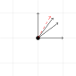

A car 30 miles north of a town drives north at 70mph, another car 50 miles west of the same town drives east at 60mph. At what rate is their distance changing?
A \(20\times 30\) inch rectangle has it's width (20 inches) increasing by 3 inches per second (at a given moment) and it's height (30 inches) is increasing by 5 inches per second. How is it's area changing?
An an ant sits on the sphere \(x^2+y^2+z^2=34\) at \((2,3,5)\). the radius shrinks at a rate of 2 units/second, and the ant is moving in such a way that it's change in \(x\)-coordinate is 1 unit/second, but change in \(y\) is -3 units/second. How is it's \(z\) coordinate changing?
Suppose \(\mathbf{x}:T\subseteq \mathbb{R}\to\mathbb{R}^2\) is differentiable at \(t_0\in T\) and \(f:X\subseteq \mathbb{R}^2\to\mathbb{R}\) is differentiable at \(\mathbf{x}_0=\mathbf{x}(t_0)=(x_0, y_0)\in X\), where \(T, X\) are open in their respective spaces and \(Im(\mathbf{x})\subseteq X\).
Then, if \(f\) is \(C^1\), then \(f\circ \mathbf{x}:T\to \mathbb{R}\) is differentiable at \(t_0\) and \[\frac{df}{dt}(t_0)=\frac{\partial f}{\partial x}(\mathbf{x}_0)\frac{dx}{dt}(t_0)+\frac{\partial f}{\partial y}(\mathbf{x}_0)\frac{dy}{dt}(t_0).\]
Let \(z=f\circ\mathbf{x}\).
\(\frac{dz}{dt}(t_0)=\displaystyle \lim_{t\to t_0}\frac{z(t)-z(t_0)}{t-t_0}\)
\(\frac{dz}{dt}(t_0)=\displaystyle \lim_{t\to t_0} \frac{f(x(t), y(t))-f(x(t_0), y(t_0))}{t-t_0}\)
\(\frac{dz}{dt}(t_0)=\displaystyle \lim_{t\to t_0} \frac{f(x,y)-f(x_0,y)+f(x_0,y)-f(x_0,y_0) }{t-t_0}\)
\(\frac{dz}{dt}(t_0)=\displaystyle \lim_{t\to t_0} \frac{f(x,y)-f(x_0,y) }{t-t_0} + \displaystyle \lim_{t\to t_0} \frac{f(x_0,y)-f(x_0,y_0) }{t-t_0}\)
\(\frac{dz}{dt}(t_0)=\displaystyle \lim_{t\to t_0} \frac{f_x(c,y)(x-x_0) }{t-t_0} + \displaystyle \lim_{t\to t_0} \frac{f_y(x_0,d)(y-y_0)}{t-t_0}\)
\(\frac{dz}{dt}(t_0)=\displaystyle \lim_{t\to t_0} f_x(x_0, y_0)\frac{dx}{dt}(t_0) + f_y(x_0, y_0)\frac{dy}{dt}(t_0).\)
Suppose \(\mathbf{x}:T\subseteq \mathbb{R}\to\mathbb{R}^n\) is differentiable at \(t_0\in T\) and \(f:X\subseteq \mathbb{R}^n\to\mathbb{R}\) is differentiable at \(\mathbf{x}_0=\mathbf{x}(t_0)\in X\), where \(T, X\) are open in their respective spaces and \(Im(\mathbf{x})\subseteq X\).
Then, if \(f\) is \(C^1\), then \(f\circ \mathbf{x}:T\to \mathbb{R}\) is differentiable at \(t_0\) and
\[\frac{df}{dt}(t_0)=\frac{\partial f}{\partial x_1}(\mathbf{x}_0)\frac{dx_1}{dt}(t_0)+\frac{\partial f}{\partial x_2}(\mathbf{x}_0)\frac{dx_2}{dt}(t_0)+\cdots + \frac{\partial f}{\partial x_n}(\mathbf{x_n}_0)\frac{dx_n}{dt}(t_0).\]
Suppose \[f(x,y,z)=x^2+y^2+z^2, \mathbf{x}(s,t)=(s\sin(t), te^s, s^2-t^3).\]
Find \(\frac{\partial f}{\partial s}, \frac{\partial f}{\partial s}.\)
Recall \[x=r\cos(\theta), y=r\sin(\theta).\]
Then suppose \[r(t)=t^2+1, \theta(t)=\frac{\pi}{6}t.\]
Find \(\frac{\partial x}{\partial t}, \frac{\partial y}{\partial t}\) when \(t=2\).
Suppose \[f(0, 0)=0, f_x(0,0)=2, f_y(0,0)=4.\]
Estimate: \[f(1,0), f(0.8, 0.6), f(0.6, 0.8), f(0,1)\] using local linear approximation.
For what \(\theta\) is \((\cos(\theta), \sin(\theta))\cdot (2,4)\) maximized?

Which of our vectors from the previous slide result in the greatest increase in \(f\)? The least? How do they compare to the red vector \((\cos(\theta), \sin(\theta))\)?
Let \(X\subseteq \mathbb{R}^n\) be open, and \(f:X\to \mathbb{R}, \mathbf{a}\in \mathbb{X}\). If \(\mathbf{v}\in \mathbb{R}^n\) is any unit vector, then the directional derivative of \(f\) at \(\mathbf{a}\) in the direction of \(\mathbf{v}\) is \[D_{\mathbf{v}}f(\mathbf{a})=\lim_{h\to 0}\frac{f(\mathbf{a}+h\mathbf{v})-f(\mathbf{a})}{h}.\]
Let \(F(t)=f(\mathbf{a}+t\mathbf{v}).\)
\(D_{\mathbf{v}}f(\mathbf{a})=\displaystyle \lim_{t\to 0}\frac{F(t)-F(0)}{t-0} =F'(0).\)
\(D_{\mathbf{v}}f(\mathbf{a})=\frac{d}{dt}f(\mathbf{a}+t\mathbf{v})|_{t=0}.\)
\(D_{\mathbf{v}}f(\mathbf{a})=\displaystyle \sum_{i=1}^n \frac{\partial f}{\partial x_i}(\mathbf{a})\cdot v_i\) by the chain rule.
Given a function \(f:X\subseteq \mathbb{R}^n\to \mathbb{R}\) that is \(C^1\), the gradient of \(f\) at \(\mathbf{a}\in X\) is: \[\nabla f(\mathbf{a})=(f_{x_1}(\mathbf{a}), \ldots, f_{x_n}(\mathbf{a})).)\]
If \(f:X\subseteq \mathbb{R}^n\to \mathbb{R}\) is \(C^1\), then \(D_{\mathbf{v}}f(\mathbf{a})\) exists for each \(\mathbf{a}\in X\), and is computed by \[\nabla f(\mathbf{a})\cdot \mathbf{v}.\]
For what \(\mathbf{v}\) is this dot product maximized? (When in general are dot products maximized?)
\(D_{\mathbf{u}}f(\mathbf{a})\) is maximized when \(\mathbf{u}\) points in the same direction as \(\nabla f(\mathbf{a})\) and is minimized when it points in the opposite direction. The maximum and minimum values are \(\|\nabla f(\mathbf{a})\|\) and \(-\|\nabla f(\mathbf{a})\|\) respectively.
Consider the function \(f(x,y)=2xy^2-4y^2\), and the point \( (1,1) \).
Find the directional derivatives in the directions \(\langle -2, 4\rangle, \langle 1, 0\rangle, \langle 0, 1\rangle, \langle 4, 2\rangle\). Then find the direction in which the directional derivative would be the greatest.
Consider \(f(x,y,z)\) and it's gradient. For any level surface \(f(x,y,z)=k\) and a point on that surface, what do we notice about the gradient vector?
Let \(f:X\subseteq \mathbb{R}^n\to \mathbb{R}\) be \(C_1\). Let \(\mathbf{x}_0\) be a point on the level set \(S=\{\mathbf{X}\in X: f(\mathbf{x}=c\}\) for some \(c\).
Let \(\mathbf{v}\) be a vector tangent to \(S\) at \(\mathbf{x}_0\). Let \(\mathbf{x}(t)=(x_1(t),\ldots, x_n(t))\) be a path on \(S\) such that \(\mathbf{x}(t_0)=\mathbf{x}_0\) and \(\mathbf{x}'(t_0)=\mathbf{v}\).
Use the fact that \(f(\mathbf{x}(t))=c\) to compute \(\frac{d}{dt}[f(\mathbf{x}(t))]\).
The chain rule gives us \(\frac{d}{dt}[f(\mathbf{x}(t))] = \nabla f(\mathbf{x}_0)\cdot \mathbf{v}\). What can we conclude about \(\nabla f(\mathbf{x}_0)\cdot \mathbf{v}\)?
Let \(f:X\subseteq \mathbb{R}^n\to \mathbb{R}\) be \(C_1\). Let \(\mathbf{x}_0\) be a point on the level set \(S=\{\mathbf{X}\in X: f(\mathbf{x}=c\}\) for some \(c\).
Then the gradient vector \(\nabla f(\mathbf{x}_0)\) is normal to \(S\).